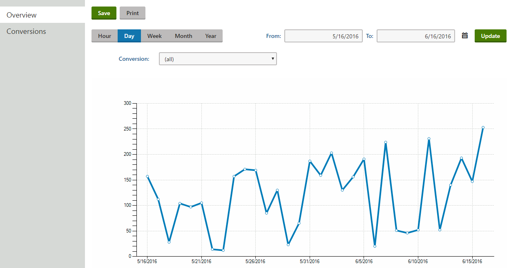
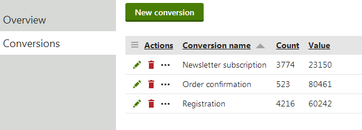

Logging custom conversions on your website
Web analytics provide a way to track actions performed by your website's visitors and record them as custom conversions. This is typically done for desired events that somehow benefit the website, such as registrations of new users, product orders, subscriptions to newsletters and similar.
Once you define an action as a conversion the system logs a conversion hit whenever the given action occurs. Additionally, conversions can log a numerical value along with each hit to indicate its importance. You can compare the recorded statistics with the values of other web analytics metrics, such as the total amount of visitors. This allows you to evaluate the website and adjust it as necessary.
Tracking specific contacts
Conversions only record the total statistics of an action and do not store information about the specific users who performed it, or any other details. You can achieve this type of advanced tracking by using Contact management, which allows you to log specific actions as Activities, including various information about the context in which the actions occurred.
While tracking all conversions that occur on the website can be useful, in many cases you may also require additional information about the context in which the given actions occurred. For this reason, conversion tracking is integrated with other web analytics and on‑line marketing features. You can use A/B or Multivariate testing to log conversions for visitors exposed to different variants of pages.These features allow you to accurately measure how changes made to the content or structure of your website's pages affect the behavior of visitors.
Important
In Kentico, there are currently two types of conversions. The first type, which is described on this page, provides you with the ability to log specific actions that you want to track by creating custom conversions. This type is also used for the mentioned A/B tests and MVT tests.
The second type is used for on-line marketing campaigns, which enable you to track specific actions of your visitors thanks to promotional emails or social media messages. Those conversions are tracked only in the Campaigns application, and you can learn more information about campaigns in Campaigns.
Kentico EMS required
Features described on this page require the Kentico EMS license.
Managing conversions
To work with conversion, open the Conversions application.
The Overview tab contains a web analytics report displaying the custom conversions that were logged on the website over the specified time period.

Viewing the Conversions overview
Detailed reports
The overview report only provides a general overview of the website's custom conversion statistics. You can view additional data for conversions that were logged under special circumstances:
In the Conversions application on the Conversions tab, edit (
 ) a custom conversion and switch to the Details tab
) a custom conversion and switch to the Details tabIn the A/B tests application, edit (
) a test and switch to the Overview tab (see A/B testing website pages)In the MVT tests application, edit (
) a test and switch to the Reports tab (see Multivariate testing)
If you switch to the Conversions tab, you can view a list of all conversions defined for the current site and manage them as necessary.

Viewing the list of conversions
To define a new custom conversion, click New conversion and fill in the following properties in the displayed dialog:
Conversion display name – the name of the custom conversion displayed in the administration interface and in reports.
Conversion code name – sets a code name that serves as a unique identifier for the custom conversion.
Conversion description – enter text describing the custom conversion's purpose.
You can modify the properties of custom conversions by editing (
) the given conversion object on its General tab.
The objects representing custom conversions are very simple and do not require any advanced configuration. However, you need to assign the custom conversions to the appropriate user actions to ensure that the system logs them correctly.
Ask your administrator to configure the logging of actions as custom conversions. See Configuring logging of actions as custom conversions for more information.
Viewing conversion statistics
To view a report displaying the statistics of a particular conversion:
Open the Conversions application.
Switch to the Conversions tab.
Edit (
) a conversion.Switch to the Details tab.
If you wish to view only data logged during a particular time period, you can specify the dates in the From and To fields. The reports includes the following details:
Conversions – the number of conversion hits that were performed by visitors.
Conversions value – the total sum of the conversion values recorded by the custom conversion.